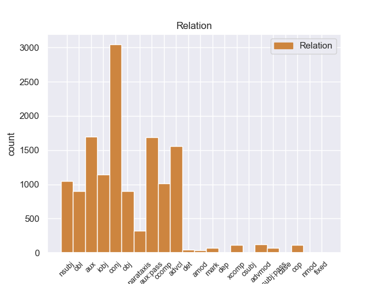
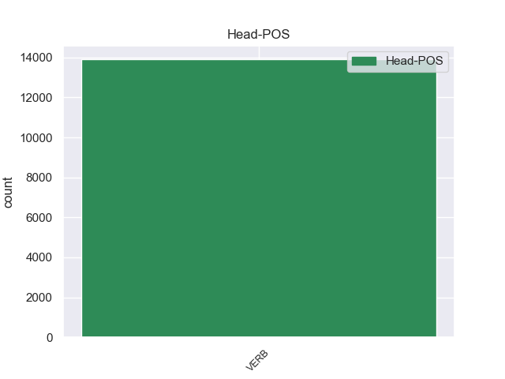
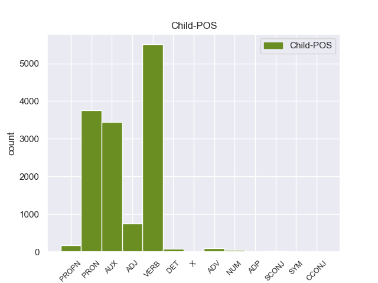

Distribution of features within this leaf



Agreement Rules sorted by frequency.
When the head token is VERB and the dependent token is VERB.
1 En _ _ _ _ 0 _ _ _
2 1991 _ _ _ _ 0 _ _ _
3 , _ _ _ _ 0 _ _ _
4 como _ _ _ _ 0 _ _ _
5 ya _ _ _ _ 0 _ _ _
6 está _ _ _ _ 0 _ _ _
7 indicado indicar VERB _ Gender=Masc|Number=Sing|Tense=Past|VerbForm=Part 14 advcl _ _
8 en _ _ _ _ 0 _ _ _
9 el _ _ _ _ 0 _ _ _
10 párrafo _ _ _ _ 0 _ _ _
11 anterior _ _ _ _ 0 _ _ _
12 , _ _ _ _ 0 _ _ _
13 se _ _ _ _ 0 _ _ _
14 creó crear VERB _ Mood=Ind|Number=Sing|Person=3|Tense=Past|VerbForm=Fin 0 _ _ _
15 un _ _ _ _ 0 _ _ _
16 equipo _ _ _ _ 0 _ _ _
17 ad _ _ _ _ 0 _ _ _
18 hoc _ _ _ _ 0 _ _ _
19 para _ _ _ _ 0 _ _ _
20 averiguar _ _ _ _ 0 _ _ _
21 como _ _ _ _ 0 _ _ _
22 se _ _ _ _ 0 _ _ _
23 podía _ _ _ _ 0 _ _ _
24 desarrollar _ _ _ _ 0 _ _ _
25 el _ _ _ _ 0 _ _ _
26 Dialogo _ _ _ _ 0 _ _ _
27 Social _ _ _ _ 0 _ _ _
28 , _ _ _ _ 0 _ _ _
29 este _ _ _ _ 0 _ _ _
30 equipo _ _ _ _ 0 _ _ _
31 estaba _ _ _ _ 0 _ _ _
32 formado _ _ _ _ 0 _ _ _
33 por _ _ _ _ 0 _ _ _
34 representantes _ _ _ _ 0 _ _ _
35 de _ _ _ _ 0 _ _ _
36 todas _ _ _ _ 0 _ _ _
37 las _ _ _ _ 0 _ _ _
38 organizaciones _ _ _ _ 0 _ _ _
39 relacionadas _ _ _ _ 0 _ _ _
40 con _ _ _ _ 0 _ _ _
41 CES _ _ _ _ 0 _ _ _
42 , _ _ _ _ 0 _ _ _
43 UNICE _ _ _ _ 0 _ _ _
44 y _ _ _ _ 0 _ _ _
45 CEEP _ _ _ _ 0 _ _ _
46 ; _ _ _ _ 0 _ _ _
When the head token is VERB and the dependent token is VERB. and the head token is VERB and the dependent token is AUX.
1 En _ _ _ _ 0 _ _ _
2 1991 _ _ _ _ 0 _ _ _
3 , _ _ _ _ 0 _ _ _
4 como _ _ _ _ 0 _ _ _
5 ya _ _ _ _ 0 _ _ _
6 está _ _ _ _ 0 _ _ _
7 indicado _ _ _ _ 0 _ _ _
8 en _ _ _ _ 0 _ _ _
9 el _ _ _ _ 0 _ _ _
10 párrafo _ _ _ _ 0 _ _ _
11 anterior _ _ _ _ 0 _ _ _
12 , _ _ _ _ 0 _ _ _
13 se _ _ _ _ 0 _ _ _
14 creó _ _ _ _ 0 _ _ _
15 un _ _ _ _ 0 _ _ _
16 equipo _ _ _ _ 0 _ _ _
17 ad _ _ _ _ 0 _ _ _
18 hoc _ _ _ _ 0 _ _ _
19 para _ _ _ _ 0 _ _ _
20 averiguar _ _ _ _ 0 _ _ _
21 como _ _ _ _ 0 _ _ _
22 se _ _ _ _ 0 _ _ _
23 podía _ _ _ _ 0 _ _ _
24 desarrollar _ _ _ _ 0 _ _ _
25 el _ _ _ _ 0 _ _ _
26 Dialogo _ _ _ _ 0 _ _ _
27 Social _ _ _ _ 0 _ _ _
28 , _ _ _ _ 0 _ _ _
29 este _ _ _ _ 0 _ _ _
30 equipo _ _ _ _ 0 _ _ _
31 estaba sestab AUX _ Mood=Ind|Number=Sing|Person=3|Tense=Imp|VerbForm=Fin 32 aux:pass _ _
32 formado formar VERB _ Gender=Masc|Number=Sing|VerbForm=Part 0 _ _ _
33 por _ _ _ _ 0 _ _ _
34 representantes _ _ _ _ 0 _ _ _
35 de _ _ _ _ 0 _ _ _
36 todas _ _ _ _ 0 _ _ _
37 las _ _ _ _ 0 _ _ _
38 organizaciones _ _ _ _ 0 _ _ _
39 relacionadas _ _ _ _ 0 _ _ _
40 con _ _ _ _ 0 _ _ _
41 CES _ _ _ _ 0 _ _ _
42 , _ _ _ _ 0 _ _ _
43 UNICE _ _ _ _ 0 _ _ _
44 y _ _ _ _ 0 _ _ _
45 CEEP _ _ _ _ 0 _ _ _
46 ; _ _ _ _ 0 _ _ _
When the head token is VERB and the dependent token is VERB. and the head token is VERB and the dependent token is AUX. and the head token is VERB and the dependent token is PRON.
1 Una _ _ _ _ 0 _ _ _
2 vez _ _ _ _ 0 _ _ _
3 que _ _ _ _ 0 _ _ _
4 el _ _ _ _ 0 _ _ _
5 Hijo _ _ _ _ 0 _ _ _
6 de _ _ _ _ 0 _ _ _
7 Krypton _ _ _ _ 0 _ _ _
8 suelta _ _ _ _ 0 _ _ _
9 el _ _ _ _ 0 _ _ _
10 misil _ _ _ _ 0 _ _ _
11 , _ _ _ _ 0 _ _ _
12 este este PRON _ Gender=Masc|Number=Sing|PronType=Dem 13 nsubj _ _
13 intenta intentar VERB _ Mood=Ind|Number=Sing|Person=3|Tense=Pres|VerbForm=Fin 0 _ _ _
14 huir _ _ _ _ 0 _ _ _
15 de _ _ _ _ 0 _ _ _
16 el _ _ _ _ 0 _ _ _
17 lugar _ _ _ _ 0 _ _ _
18 pero _ _ _ _ 0 _ _ _
19 es _ _ _ _ 0 _ _ _
20 atrapado _ _ _ _ 0 _ _ _
21 en _ _ _ _ 0 _ _ _
22 la _ _ _ _ 0 _ _ _
23 explosión _ _ _ _ 0 _ _ _
24 . _ _ _ _ 0 _ _ _
When the head token is VERB and the dependent token is VERB. and the head token is VERB and the dependent token is AUX. and the head token is VERB and the dependent token is PRON. and the head token is VERB and the dependent token is ADJ.
1 Ahora _ _ _ _ 0 _ _ _
2 se _ _ _ _ 0 _ _ _
3 aunan _ _ _ _ 0 _ _ _
4 cocina _ _ _ _ 0 _ _ _
5 y _ _ _ _ 0 _ _ _
6 entorno _ _ _ _ 0 _ _ _
7 , _ _ _ _ 0 _ _ _
8 me _ _ _ _ 0 _ _ _
9 encanto encantor VERB _ Mood=Ind|Number=Sing|Person=3|Tense=Pres|VerbForm=Fin 0 _ _ _
10 la _ _ _ _ 0 _ _ _
11 bodega _ _ _ _ 0 _ _ _
12 , _ _ _ _ 0 _ _ _
13 las _ _ _ _ 0 _ _ _
14 sillas _ _ _ _ 0 _ _ _
15 son _ _ _ _ 0 _ _ _
16 comodisimas _ _ _ _ 0 _ _ _
17 , _ _ _ _ 0 _ _ _
18 la _ _ _ _ 0 _ _ _
19 iluminacion _ _ _ _ 0 _ _ _
20 es _ _ _ _ 0 _ _ _
21 excepcional excepcional ADJ _ Gender=Fem|Number=Sing 9 conj _ _
22 , _ _ _ _ 0 _ _ _
23 alcanzas _ _ _ _ 0 _ _ _
24 un _ _ _ _ 0 _ _ _
25 grado _ _ _ _ 0 _ _ _
26 de _ _ _ _ 0 _ _ _
27 satisfaccion _ _ _ _ 0 _ _ _
28 que _ _ _ _ 0 _ _ _
29 no _ _ _ _ 0 _ _ _
30 se _ _ _ _ 0 _ _ _
31 puede _ _ _ _ 0 _ _ _
32 describir _ _ _ _ 0 _ _ _
33 , _ _ _ _ 0 _ _ _
34 hay _ _ _ _ 0 _ _ _
35 que _ _ _ _ 0 _ _ _
36 probar _ _ _ _ 0 _ _ _
37 lo _ _ _ _ 0 _ _ _
38 , _ _ _ _ 0 _ _ _
39 es _ _ _ _ 0 _ _ _
40 la _ _ _ _ 0 _ _ _
41 primera _ _ _ _ 0 _ _ _
42 vez _ _ _ _ 0 _ _ _
43 en _ _ _ _ 0 _ _ _
44 mi _ _ _ _ 0 _ _ _
45 vda _ _ _ _ 0 _ _ _
46 que _ _ _ _ 0 _ _ _
47 una _ _ _ _ 0 _ _ _
48 cocina _ _ _ _ 0 _ _ _
49 me _ _ _ _ 0 _ _ _
50 emociona _ _ _ _ 0 _ _ _
51 hasta _ _ _ _ 0 _ _ _
52 ese _ _ _ _ 0 _ _ _
53 punto _ _ _ _ 0 _ _ _
54 . _ _ _ _ 0 _ _ _
When the head token is VERB and the dependent token is VERB. and the head token is VERB and the dependent token is AUX. and the head token is VERB and the dependent token is PRON. and the head token is VERB and the dependent token is ADJ. and the head token is VERB and the dependent token is PROPN.
1 La _ _ _ _ 0 _ _ _
2 Cabeza cabeza PROPN _ Gender=Fem|Number=Sing 5 nsubj _ _
3 Mediana _ _ _ _ 0 _ _ _
4 se _ _ _ _ 0 _ _ _
5 halla hallar VERB _ Mood=Ind|Number=Sing|Person=3|Tense=Pres|VerbForm=Fin 0 _ _ _
6 a _ _ _ _ 0 _ _ _
7 el _ _ _ _ 0 _ _ _
8 norte _ _ _ _ 0 _ _ _
9 de _ _ _ _ 0 _ _ _
10 el _ _ _ _ 0 _ _ _
11 arroyo _ _ _ _ 0 _ _ _
12 de _ _ _ _ 0 _ _ _
13 Angostura _ _ _ _ 0 _ _ _
14 , _ _ _ _ 0 _ _ _
15 una _ _ _ _ 0 _ _ _
16 de _ _ _ _ 0 _ _ _
17 las _ _ _ _ 0 _ _ _
18 corrientes _ _ _ _ 0 _ _ _
19 fluviales _ _ _ _ 0 _ _ _
20 que _ _ _ _ 0 _ _ _
21 forman _ _ _ _ 0 _ _ _
22 el _ _ _ _ 0 _ _ _
23 río _ _ _ _ 0 _ _ _
24 Lozoya _ _ _ _ 0 _ _ _
25 , _ _ _ _ 0 _ _ _
26 y _ _ _ _ 0 _ _ _
27 a _ _ _ _ 0 _ _ _
28 el _ _ _ _ 0 _ _ _
29 sur _ _ _ _ 0 _ _ _
30 de _ _ _ _ 0 _ _ _
31 el _ _ _ _ 0 _ _ _
32 Monasterio _ _ _ _ 0 _ _ _
33 de _ _ _ _ 0 _ _ _
34 El _ _ _ _ 0 _ _ _
35 Paular _ _ _ _ 0 _ _ _
36 , _ _ _ _ 0 _ _ _
37 de _ _ _ _ 0 _ _ _
38 el _ _ _ _ 0 _ _ _
39 que _ _ _ _ 0 _ _ _
40 le _ _ _ _ 0 _ _ _
41 separan _ _ _ _ 0 _ _ _
42 unos _ _ _ _ 0 _ _ _
43 cinco _ _ _ _ 0 _ _ _
44 kilómetros _ _ _ _ 0 _ _ _
45 . _ _ _ _ 0 _ _ _
When the head token is VERB and the dependent token is VERB. and the head token is VERB and the dependent token is AUX. and the head token is VERB and the dependent token is PRON. and the head token is VERB and the dependent token is ADJ. and the head token is VERB and the dependent token is PROPN. and the head token is VERB and the dependent token is DET.
1 Esa _ _ _ _ 0 _ _ _
2 iniciativa _ _ _ _ 0 _ _ _
3 , _ _ _ _ 0 _ _ _
4 como _ _ _ _ 0 _ _ _
5 otras otro DET _ Gender=Fem|Number=Plur|PronType=Ind 6 obl _ _
6 surgidas surgido VERB _ Gender=Fem|Number=Plur|VerbForm=Part 0 _ _ _
7 en _ _ _ _ 0 _ _ _
8 las _ _ _ _ 0 _ _ _
9 últimas _ _ _ _ 0 _ _ _
10 semanas _ _ _ _ 0 _ _ _
11 , _ _ _ _ 0 _ _ _
12 ha _ _ _ _ 0 _ _ _
13 estado _ _ _ _ 0 _ _ _
14 alentada _ _ _ _ 0 _ _ _
15 por _ _ _ _ 0 _ _ _
16 el _ _ _ _ 0 _ _ _
17 debate _ _ _ _ 0 _ _ _
18 en _ _ _ _ 0 _ _ _
19 la _ _ _ _ 0 _ _ _
20 Red. _ _ _ _ 0 _ _ _
When the head token is VERB and the dependent token is VERB. and the head token is VERB and the dependent token is AUX. and the head token is VERB and the dependent token is PRON. and the head token is VERB and the dependent token is ADJ. and the head token is VERB and the dependent token is PROPN. and the head token is VERB and the dependent token is DET. and the head token is VERB and the dependent token is ADV.
1 Recientemente _ _ _ _ 0 _ _ _
2 se _ _ _ _ 0 _ _ _
3 ha _ _ _ _ 0 _ _ _
4 desestimado _ _ _ _ 0 _ _ _
5 el _ _ _ _ 0 _ _ _
6 vínculo _ _ _ _ 0 _ _ _
7 de _ _ _ _ 0 _ _ _
8 la _ _ _ _ 0 _ _ _
9 sustancia _ _ _ _ 0 _ _ _
10 con _ _ _ _ 0 _ _ _
11 una _ _ _ _ 0 _ _ _
12 acción _ _ _ _ 0 _ _ _
13 supresora _ _ _ _ 0 _ _ _
14 sobre _ _ _ _ 0 _ _ _
15 la _ _ _ _ 0 _ _ _
16 secreción _ _ _ _ 0 _ _ _
17 de _ _ _ _ 0 _ _ _
18 hormona _ _ _ _ 0 _ _ _
19 de _ _ _ _ 0 _ _ _
20 crecimiento _ _ _ _ 0 _ _ _
21 y _ _ _ _ 0 _ _ _
22 de _ _ _ _ 0 _ _ _
23 prolactina _ _ _ _ 0 _ _ _
24 , _ _ _ _ 0 _ _ _
25 tal tal ADV _ Number=Sing 29 advmod _ _
26 como _ _ _ _ 0 _ _ _
27 había _ _ _ _ 0 _ _ _
28 sido _ _ _ _ 0 _ _ _
29 postulado postular VERB _ Gender=Masc|Number=Sing|Tense=Past|VerbForm=Part 0 _ _ _
30 . _ _ _ _ 0 _ _ _
When the head token is VERB and the dependent token is VERB. and the head token is VERB and the dependent token is AUX. and the head token is VERB and the dependent token is PRON. and the head token is VERB and the dependent token is ADJ. and the head token is VERB and the dependent token is PROPN. and the head token is VERB and the dependent token is DET. and the head token is VERB and the dependent token is ADV. and the head token is VERB and the dependent token is NUM.
1 De _ _ _ _ 0 _ _ _
2 las _ _ _ _ 0 _ _ _
3 8 _ _ _ _ 0 _ _ _
4 porciones _ _ _ _ 0 _ _ _
5 , _ _ _ _ 0 _ _ _
6 cuatro cuatro NUM _ Number=Plur|NumType=Card 7 nsubj _ _
7 correspondieron correspondier VERB _ Mood=Ind|Number=Plur|Person=3|Tense=Past|VerbForm=Fin 0 _ _ _
8 a _ _ _ _ 0 _ _ _
9 el _ _ _ _ 0 _ _ _
10 rey _ _ _ _ 0 _ _ _
11 , _ _ _ _ 0 _ _ _
12 una _ _ _ _ 0 _ _ _
13 a _ _ _ _ 0 _ _ _
14 el _ _ _ _ 0 _ _ _
15 conde _ _ _ _ 0 _ _ _
16 de _ _ _ _ 0 _ _ _
17 el _ _ _ _ 0 _ _ _
18 Rosellón _ _ _ _ 0 _ _ _
19 Nuño _ _ _ _ 0 _ _ _
20 Sánchez _ _ _ _ 0 _ _ _
21 , _ _ _ _ 0 _ _ _
22 una _ _ _ _ 0 _ _ _
23 a _ _ _ _ 0 _ _ _
24 el _ _ _ _ 0 _ _ _
25 obispo _ _ _ _ 0 _ _ _
26 de _ _ _ _ 0 _ _ _
27 Barcelona _ _ _ _ 0 _ _ _
28 Berenguer _ _ _ _ 0 _ _ _
29 de _ _ _ _ 0 _ _ _
30 Palou _ _ _ _ 0 _ _ _
31 , _ _ _ _ 0 _ _ _
32 una _ _ _ _ 0 _ _ _
33 a _ _ _ _ 0 _ _ _
34 el _ _ _ _ 0 _ _ _
35 Conde _ _ _ _ 0 _ _ _
36 de _ _ _ _ 0 _ _ _
37 Ampurias _ _ _ _ 0 _ _ _
38 y _ _ _ _ 0 _ _ _
39 finalmente _ _ _ _ 0 _ _ _
40 otra _ _ _ _ 0 _ _ _
41 a _ _ _ _ 0 _ _ _
42 el _ _ _ _ 0 _ _ _
43 vizconde _ _ _ _ 0 _ _ _
44 de _ _ _ _ 0 _ _ _
45 Bearn _ _ _ _ 0 _ _ _
46 . _ _ _ _ 0 _ _ _
When the head token is VERB and the dependent token is VERB. and the head token is VERB and the dependent token is AUX. and the head token is VERB and the dependent token is PRON. and the head token is VERB and the dependent token is ADJ. and the head token is VERB and the dependent token is PROPN. and the head token is VERB and the dependent token is DET. and the head token is VERB and the dependent token is ADV. and the head token is VERB and the dependent token is NUM. and the head token is VERB and the dependent token is SCONJ.
1 El _ _ _ _ 0 _ _ _
2 mandatario _ _ _ _ 0 _ _ _
3 uruguayo _ _ _ _ 0 _ _ _
4 , _ _ _ _ 0 _ _ _
5 quien quien SCONJ _ Number=Sing|PronType=Int,Rel 6 mark _ _
6 llegó llegar VERB _ Mood=Ind|Number=Sing|Person=3|Tense=Past|VerbForm=Fin 0 _ _ _
7 el _ _ _ _ 0 _ _ _
8 domingo _ _ _ _ 0 _ _ _
9 a _ _ _ _ 0 _ _ _
10 Paraguay _ _ _ _ 0 _ _ _
11 , _ _ _ _ 0 _ _ _
12 inició _ _ _ _ 0 _ _ _
13 este _ _ _ _ 0 _ _ _
14 lunes _ _ _ _ 0 _ _ _
15 sus _ _ _ _ 0 _ _ _
16 actividades _ _ _ _ 0 _ _ _
17 a _ _ _ _ 0 _ _ _
18 el _ _ _ _ 0 _ _ _
19 colocar _ _ _ _ 0 _ _ _
20 una _ _ _ _ 0 _ _ _
21 ofrenda _ _ _ _ 0 _ _ _
22 floral _ _ _ _ 0 _ _ _
23 en _ _ _ _ 0 _ _ _
24 el _ _ _ _ 0 _ _ _
25 Panteón _ _ _ _ 0 _ _ _
26 de _ _ _ _ 0 _ _ _
27 los _ _ _ _ 0 _ _ _
28 Héroes _ _ _ _ 0 _ _ _
29 , _ _ _ _ 0 _ _ _
30 tras _ _ _ _ 0 _ _ _
31 lo _ _ _ _ 0 _ _ _
32 cual _ _ _ _ 0 _ _ _
33 se _ _ _ _ 0 _ _ _
34 trasladó _ _ _ _ 0 _ _ _
35 a _ _ _ _ 0 _ _ _
36 el _ _ _ _ 0 _ _ _
37 Palacio _ _ _ _ 0 _ _ _
38 de _ _ _ _ 0 _ _ _
39 Gobierno _ _ _ _ 0 _ _ _
40 donde _ _ _ _ 0 _ _ _
41 fue _ _ _ _ 0 _ _ _
42 condecorado _ _ _ _ 0 _ _ _
43 por _ _ _ _ 0 _ _ _
44 Lugo _ _ _ _ 0 _ _ _
45 . _ _ _ _ 0 _ _ _
When the head token is VERB and the dependent token is VERB. and the head token is VERB and the dependent token is AUX. and the head token is VERB and the dependent token is PRON. and the head token is VERB and the dependent token is ADJ. and the head token is VERB and the dependent token is PROPN. and the head token is VERB and the dependent token is DET. and the head token is VERB and the dependent token is ADV. and the head token is VERB and the dependent token is NUM. and the head token is VERB and the dependent token is SCONJ. and the head token is VERB and the dependent token is X.
1 Euceraea _ _ _ _ 0 _ _ _
2 nitida _ _ _ _ 0 _ _ _
3 fue _ _ _ _ 0 _ _ _
4 descrita descrito VERB _ Gender=Masc|Number=Sing|Tense=Past|VerbForm=Part 0 _ _ _
5 por _ _ _ _ 0 _ _ _
6 Carl _ _ _ _ 0 _ _ _
7 Friedrich _ _ _ _ 0 _ _ _
8 Philipp _ _ _ _ 0 _ _ _
9 von _ _ _ _ 0 _ _ _
10 Martius _ _ _ _ 0 _ _ _
11 y _ _ _ _ 0 _ _ _
12 publicado _ _ _ _ 0 _ _ _
13 en _ _ _ _ 0 _ _ _
14 Nova _ _ _ _ 0 _ _ _
15 Genera _ _ _ _ 0 _ _ _
16 et _ _ _ _ 0 _ _ _
17 Species _ _ _ _ 0 _ _ _
18 Plantarum _ _ _ _ 0 _ _ _
19 ... _ _ _ _ 0 _ _ _
20 3 _ _ _ _ 0 _ _ _
21 : _ _ _ _ 0 _ _ _
22 90 _ _ _ _ 0 _ _ _
23 , _ _ _ _ 0 _ _ _
24 pl pl X _ Gender=Masc|Number=Sing 4 obl _ _
25 . _ _ _ _ 0 _ _ _
When the head token is VERB and the dependent token is VERB. and the head token is VERB and the dependent token is AUX. and the head token is VERB and the dependent token is PRON. and the head token is VERB and the dependent token is ADJ. and the head token is VERB and the dependent token is PROPN. and the head token is VERB and the dependent token is DET. and the head token is VERB and the dependent token is ADV. and the head token is VERB and the dependent token is NUM. and the head token is VERB and the dependent token is SCONJ. and the head token is VERB and the dependent token is X. and the head token is VERB and the dependent token is ADP.
1 En _ _ _ _ 0 _ _ _
2 realidad _ _ _ _ 0 _ _ _
3 , _ _ _ _ 0 _ _ _
4 ella _ _ _ _ 0 _ _ _
5 muere _ _ _ _ 0 _ _ _
6 luego _ _ _ _ 0 _ _ _
7 de _ _ _ _ 0 _ _ _
8 dar _ _ _ _ 0 _ _ _
9 a _ _ _ _ 0 _ _ _
10 luz _ _ _ _ 0 _ _ _
11 a _ _ _ _ 0 _ _ _
12 sus _ _ _ _ 0 _ _ _
13 hijos _ _ _ _ 0 _ _ _
14 , _ _ _ _ 0 _ _ _
15 Luke _ _ _ _ 0 _ _ _
16 y _ _ _ _ 0 _ _ _
17 Leia _ _ _ _ 0 _ _ _
18 , _ _ _ _ 0 _ _ _
19 puesto puesto ADP _ Gender=Masc|Number=Sing|VerbForm=Part 22 mark _ _
20 que _ _ _ _ 0 _ _ _
21 no _ _ _ _ 0 _ _ _
22 tenia tener VERB _ Mood=Ind|Number=Sing|Person=3|Tense=Imp|VerbForm=Fin 0 _ _ _
23 ganas _ _ _ _ 0 _ _ _
24 de _ _ _ _ 0 _ _ _
25 vivir _ _ _ _ 0 _ _ _
26 . _ _ _ _ 0 _ _ _
When the head token is VERB and the dependent token is VERB. and the head token is VERB and the dependent token is AUX. and the head token is VERB and the dependent token is PRON. and the head token is VERB and the dependent token is ADJ. and the head token is VERB and the dependent token is PROPN. and the head token is VERB and the dependent token is DET. and the head token is VERB and the dependent token is ADV. and the head token is VERB and the dependent token is NUM. and the head token is VERB and the dependent token is SCONJ. and the head token is VERB and the dependent token is X. and the head token is VERB and the dependent token is ADP. and the head token is VERB and the dependent token is CCONJ.
1 Esta _ _ _ _ 0 _ _ _
2 celebración _ _ _ _ 0 _ _ _
3 , _ _ _ _ 0 _ _ _
4 declarada _ _ _ _ 0 _ _ _
5 Patrimonio _ _ _ _ 0 _ _ _
6 Oral _ _ _ _ 0 _ _ _
7 e _ _ _ _ 0 _ _ _
8 Inmaterial _ _ _ _ 0 _ _ _
9 de _ _ _ _ 0 _ _ _
10 la _ _ _ _ 0 _ _ _
11 Humanidad _ _ _ _ 0 _ _ _
12 , _ _ _ _ 0 _ _ _
13 ha _ _ _ _ 0 _ _ _
14 decidido _ _ _ _ 0 _ _ _
15 salir _ _ _ _ 0 _ _ _
16 a _ _ _ _ 0 _ _ _
17 Europa _ _ _ _ 0 _ _ _
18 para _ _ _ _ 0 _ _ _
19 transmitir _ _ _ _ 0 _ _ _
20 su _ _ _ _ 0 _ _ _
21 mensaje _ _ _ _ 0 _ _ _
22 de _ _ _ _ 0 _ _ _
23 tolerancia _ _ _ _ 0 _ _ _
24 , _ _ _ _ 0 _ _ _
25 mestizaje _ _ _ _ 0 _ _ _
26 y _ _ _ _ 0 _ _ _
27 alegría _ _ _ _ 0 _ _ _
28 e _ _ _ _ 0 _ _ _
29 invitar _ _ _ _ 0 _ _ _
30 a _ _ _ _ 0 _ _ _
31 todos _ _ _ _ 0 _ _ _
32 a _ _ _ _ 0 _ _ _
33 poner _ _ _ _ 0 _ _ _
34 se _ _ _ _ 0 _ _ _
35 la _ _ _ _ 0 _ _ _
36 máscara _ _ _ _ 0 _ _ _
37 y _ _ _ _ 0 _ _ _
38 disfrutar _ _ _ _ 0 _ _ _
39 lo _ _ _ _ 0 _ _ _
40 bajo _ _ _ _ 0 _ _ _
41 el _ _ _ _ 0 _ _ _
42 lema _ _ _ _ 0 _ _ _
43 ¡ _ _ _ _ 0 _ _ _
44 quién _ _ _ _ 0 _ _ _
45 lo _ _ _ _ 0 _ _ _
46 vive _ _ _ _ 0 _ _ _
47 es ser CCONJ _ Mood=Ind|Number=Sing|Person=3|Tense=Pres|VerbForm=Fin 50 cop _ _
48 quién _ _ _ _ 0 _ _ _
49 lo _ _ _ _ 0 _ _ _
50 goza gozar VERB _ Mood=Ind|Number=Sing|Person=3|Tense=Pres|VerbForm=Fin 0 _ _ _
51 ! _ _ _ _ 0 _ _ _
When the head token is VERB and the dependent token is VERB. and the head token is VERB and the dependent token is AUX. and the head token is VERB and the dependent token is PRON. and the head token is VERB and the dependent token is ADJ. and the head token is VERB and the dependent token is PROPN. and the head token is VERB and the dependent token is DET. and the head token is VERB and the dependent token is ADV. and the head token is VERB and the dependent token is NUM. and the head token is VERB and the dependent token is SCONJ. and the head token is VERB and the dependent token is X. and the head token is VERB and the dependent token is ADP. and the head token is VERB and the dependent token is CCONJ. and the head token is VERB and the dependent token is SYM.
1 El _ _ _ _ 0 _ _ _
2 problema _ _ _ _ 0 _ _ _
3 es _ _ _ _ 0 _ _ _
4 que _ _ _ _ 0 _ _ _
5 no _ _ _ _ 0 _ _ _
6 han _ _ _ _ 0 _ _ _
7 sido _ _ _ _ 0 _ _ _
8 capaces _ _ _ _ 0 _ _ _
9 de _ _ _ _ 0 _ _ _
10 resolver _ _ _ _ 0 _ _ _
11 , _ _ _ _ 0 _ _ _
12 como _ _ _ _ 0 _ _ _
13 lo _ _ _ _ 0 _ _ _
14 han _ _ _ _ 0 _ _ _
15 hecho _ _ _ _ 0 _ _ _
16 otros _ _ _ _ 0 _ _ _
17 hoteles _ _ _ _ 0 _ _ _
18 , _ _ _ _ 0 _ _ _
19 el _ _ _ _ 0 _ _ _
20 hecho _ _ _ _ 0 _ _ _
21 de _ _ _ _ 0 _ _ _
22 que _ _ _ _ 0 _ _ _
23 los _ _ _ _ 0 _ _ _
24 clientes _ _ _ _ 0 _ _ _
25 a _ _ _ _ 0 _ _ _
26 las _ _ _ _ 0 _ _ _
27 8:00 _ _ _ _ 0 _ _ _
28 h h SYM _ Gender=Fem|Number=Plur 32 obl _ _
29 de _ _ _ _ 0 _ _ _
30 la _ _ _ _ 0 _ _ _
31 mañana _ _ _ _ 0 _ _ _
32 empiecen empiecer VERB _ Mood=Ind|Number=Plur|Person=3|Tense=Pres|VerbForm=Fin 0 _ _ _
33 a _ _ _ _ 0 _ _ _
34 guardar _ _ _ _ 0 _ _ _
35 las _ _ _ _ 0 _ _ _
36 tumbonas _ _ _ _ 0 _ _ _
37 con _ _ _ _ 0 _ _ _
38 las _ _ _ _ 0 _ _ _
39 toallas _ _ _ _ 0 _ _ _
40 , _ _ _ _ 0 _ _ _
41 y _ _ _ _ 0 _ _ _
42 no _ _ _ _ 0 _ _ _
43 hay _ _ _ _ 0 _ _ _
44 donde _ _ _ _ 0 _ _ _
45 poner _ _ _ _ 0 _ _ _
46 se _ _ _ _ 0 _ _ _
47 , _ _ _ _ 0 _ _ _
48 permaneciendo _ _ _ _ 0 _ _ _
49 el _ _ _ _ 0 _ _ _
50 50 _ _ _ _ 0 _ _ _
51 % _ _ _ _ 0 _ _ _
52 vacías _ _ _ _ 0 _ _ _
53 todo _ _ _ _ 0 _ _ _
54 el _ _ _ _ 0 _ _ _
55 día _ _ _ _ 0 _ _ _
56 . _ _ _ _ 0 _ _ _
Disagree Examples:
1 También _ _ _ _ 0 _ _ _
2 hay _ _ _ _ 0 _ _ _
3 hormonas _ _ _ _ 0 _ _ _
4 tróficas _ _ _ _ 0 _ _ _
5 y _ _ _ _ 0 _ _ _
6 no _ _ _ _ 0 _ _ _
7 tróficas _ _ _ _ 0 _ _ _
8 , _ _ _ _ 0 _ _ _
9 según _ _ _ _ 0 _ _ _
10 el _ _ _ _ 0 _ _ _
11 blanco _ _ _ _ 0 _ _ _
12 sobre _ _ _ _ 0 _ _ _
13 el _ _ _ _ 0 _ _ _
14 cual cual PRON _ Number=Sing|PronType=Int,Rel 15 obl _ _
15 actúan actuar VERB _ Mood=Ind|Number=Plur|Person=3|Tense=Pres|VerbForm=Fin 0 _ _ _
16 . _ _ _ _ 0 _ _ _
1 Además _ _ _ _ 0 _ _ _
2 , _ _ _ _ 0 _ _ _
3 el _ _ _ _ 0 _ _ _
4 documento _ _ _ _ 0 _ _ _
5 recuerda recordar VERB _ Mood=Ind|Number=Sing|Person=3|Tense=Pres|VerbForm=Fin 0 _ _ _
6 que _ _ _ _ 0 _ _ _
7 " _ _ _ _ 0 _ _ _
8 no _ _ _ _ 0 _ _ _
9 existen existir VERB _ Mood=Ind|Number=Plur|Person=3|Tense=Pres|VerbForm=Fin 5 ccomp _ _
10 requisitos _ _ _ _ 0 _ _ _
11 de _ _ _ _ 0 _ _ _
12 seguridad _ _ _ _ 0 _ _ _
13 dentro _ _ _ _ 0 _ _ _
14 de _ _ _ _ 0 _ _ _
15 el _ _ _ _ 0 _ _ _
16 avión _ _ _ _ 0 _ _ _
17 que _ _ _ _ 0 _ _ _
18 exijan _ _ _ _ 0 _ _ _
19 ver _ _ _ _ 0 _ _ _
20 su _ _ _ _ 0 _ _ _
21 cara _ _ _ _ 0 _ _ _
22 , _ _ _ _ 0 _ _ _
23 ya _ _ _ _ 0 _ _ _
24 que _ _ _ _ 0 _ _ _
25 es _ _ _ _ 0 _ _ _
26 común _ _ _ _ 0 _ _ _
27 ver _ _ _ _ 0 _ _ _
28 en _ _ _ _ 0 _ _ _
29 vuelos _ _ _ _ 0 _ _ _
30 de _ _ _ _ 0 _ _ _
31 largo _ _ _ _ 0 _ _ _
32 recorrido _ _ _ _ 0 _ _ _
33 a _ _ _ _ 0 _ _ _
34 personas _ _ _ _ 0 _ _ _
35 con _ _ _ _ 0 _ _ _
36 máscaras _ _ _ _ 0 _ _ _
37 de _ _ _ _ 0 _ _ _
38 descanso _ _ _ _ 0 _ _ _
39 " _ _ _ _ 0 _ _ _
40 . _ _ _ _ 0 _ _ _
1 Además _ _ _ _ 0 _ _ _
2 , _ _ _ _ 0 _ _ _
3 el _ _ _ _ 0 _ _ _
4 documento _ _ _ _ 0 _ _ _
5 recuerda _ _ _ _ 0 _ _ _
6 que _ _ _ _ 0 _ _ _
7 " _ _ _ _ 0 _ _ _
8 no _ _ _ _ 0 _ _ _
9 existen existir VERB _ Mood=Ind|Number=Plur|Person=3|Tense=Pres|VerbForm=Fin 0 _ _ _
10 requisitos _ _ _ _ 0 _ _ _
11 de _ _ _ _ 0 _ _ _
12 seguridad _ _ _ _ 0 _ _ _
13 dentro _ _ _ _ 0 _ _ _
14 de _ _ _ _ 0 _ _ _
15 el _ _ _ _ 0 _ _ _
16 avión _ _ _ _ 0 _ _ _
17 que _ _ _ _ 0 _ _ _
18 exijan _ _ _ _ 0 _ _ _
19 ver _ _ _ _ 0 _ _ _
20 su _ _ _ _ 0 _ _ _
21 cara _ _ _ _ 0 _ _ _
22 , _ _ _ _ 0 _ _ _
23 ya _ _ _ _ 0 _ _ _
24 que _ _ _ _ 0 _ _ _
25 es _ _ _ _ 0 _ _ _
26 común común ADJ _ Number=Sing 9 advcl _ _
27 ver _ _ _ _ 0 _ _ _
28 en _ _ _ _ 0 _ _ _
29 vuelos _ _ _ _ 0 _ _ _
30 de _ _ _ _ 0 _ _ _
31 largo _ _ _ _ 0 _ _ _
32 recorrido _ _ _ _ 0 _ _ _
33 a _ _ _ _ 0 _ _ _
34 personas _ _ _ _ 0 _ _ _
35 con _ _ _ _ 0 _ _ _
36 máscaras _ _ _ _ 0 _ _ _
37 de _ _ _ _ 0 _ _ _
38 descanso _ _ _ _ 0 _ _ _
39 " _ _ _ _ 0 _ _ _
40 . _ _ _ _ 0 _ _ _
1 Los _ _ _ _ 0 _ _ _
2 dos _ _ _ _ 0 _ _ _
3 primeros _ _ _ _ 0 _ _ _
4 , _ _ _ _ 0 _ _ _
5 Hermann _ _ _ _ 0 _ _ _
6 von _ _ _ _ 0 _ _ _
7 Wied _ _ _ _ 0 _ _ _
8 y _ _ _ _ 0 _ _ _
9 Salentin _ _ _ _ 0 _ _ _
10 von _ _ _ _ 0 _ _ _
11 Isenburg _ _ _ _ 0 _ _ _
12 - _ _ _ _ 0 _ _ _
13 Grenzau _ _ _ _ 0 _ _ _
14 , _ _ _ _ 0 _ _ _
15 renunciaron renunciar VERB _ Mood=Ind|Number=Plur|Person=3|Tense=Past|VerbForm=Fin 0 _ _ _
16 a _ _ _ _ 0 _ _ _
17 el _ _ _ _ 0 _ _ _
18 Arzobispado _ _ _ _ 0 _ _ _
19 a _ _ _ _ 0 _ _ _
20 el _ _ _ _ 0 _ _ _
21 convertir convertir VERB _ Gender=Masc|Number=Sing|VerbForm=Fin 15 advcl _ _
22 se _ _ _ _ 0 _ _ _
23 , _ _ _ _ 0 _ _ _
24 pero _ _ _ _ 0 _ _ _
25 Gebhard _ _ _ _ 0 _ _ _
26 Truchsess _ _ _ _ 0 _ _ _
27 von _ _ _ _ 0 _ _ _
28 Waldburg _ _ _ _ 0 _ _ _
29 , _ _ _ _ 0 _ _ _
30 a _ _ _ _ 0 _ _ _
31 el _ _ _ _ 0 _ _ _
32 convertir _ _ _ _ 0 _ _ _
33 se _ _ _ _ 0 _ _ _
34 a _ _ _ _ 0 _ _ _
35 el _ _ _ _ 0 _ _ _
36 Calvinismo _ _ _ _ 0 _ _ _
37 en _ _ _ _ 0 _ _ _
38 1582 _ _ _ _ 0 _ _ _
39 , _ _ _ _ 0 _ _ _
40 intentó _ _ _ _ 0 _ _ _
41 secularizar _ _ _ _ 0 _ _ _
42 el _ _ _ _ 0 _ _ _
43 Arzobispado _ _ _ _ 0 _ _ _
44 . _ _ _ _ 0 _ _ _
1 Los _ _ _ _ 0 _ _ _
2 dos _ _ _ _ 0 _ _ _
3 primeros _ _ _ _ 0 _ _ _
4 , _ _ _ _ 0 _ _ _
5 Hermann _ _ _ _ 0 _ _ _
6 von _ _ _ _ 0 _ _ _
7 Wied _ _ _ _ 0 _ _ _
8 y _ _ _ _ 0 _ _ _
9 Salentin _ _ _ _ 0 _ _ _
10 von _ _ _ _ 0 _ _ _
11 Isenburg _ _ _ _ 0 _ _ _
12 - _ _ _ _ 0 _ _ _
13 Grenzau _ _ _ _ 0 _ _ _
14 , _ _ _ _ 0 _ _ _
15 renunciaron renunciar VERB _ Mood=Ind|Number=Plur|Person=3|Tense=Past|VerbForm=Fin 0 _ _ _
16 a _ _ _ _ 0 _ _ _
17 el _ _ _ _ 0 _ _ _
18 Arzobispado _ _ _ _ 0 _ _ _
19 a _ _ _ _ 0 _ _ _
20 el _ _ _ _ 0 _ _ _
21 convertir _ _ _ _ 0 _ _ _
22 se _ _ _ _ 0 _ _ _
23 , _ _ _ _ 0 _ _ _
24 pero _ _ _ _ 0 _ _ _
25 Gebhard _ _ _ _ 0 _ _ _
26 Truchsess _ _ _ _ 0 _ _ _
27 von _ _ _ _ 0 _ _ _
28 Waldburg _ _ _ _ 0 _ _ _
29 , _ _ _ _ 0 _ _ _
30 a _ _ _ _ 0 _ _ _
31 el _ _ _ _ 0 _ _ _
32 convertir _ _ _ _ 0 _ _ _
33 se _ _ _ _ 0 _ _ _
34 a _ _ _ _ 0 _ _ _
35 el _ _ _ _ 0 _ _ _
36 Calvinismo _ _ _ _ 0 _ _ _
37 en _ _ _ _ 0 _ _ _
38 1582 _ _ _ _ 0 _ _ _
39 , _ _ _ _ 0 _ _ _
40 intentó intentar VERB _ Mood=Ind|Number=Sing|Person=3|Tense=Past|VerbForm=Fin 15 conj _ _
41 secularizar _ _ _ _ 0 _ _ _
42 el _ _ _ _ 0 _ _ _
43 Arzobispado _ _ _ _ 0 _ _ _
44 . _ _ _ _ 0 _ _ _